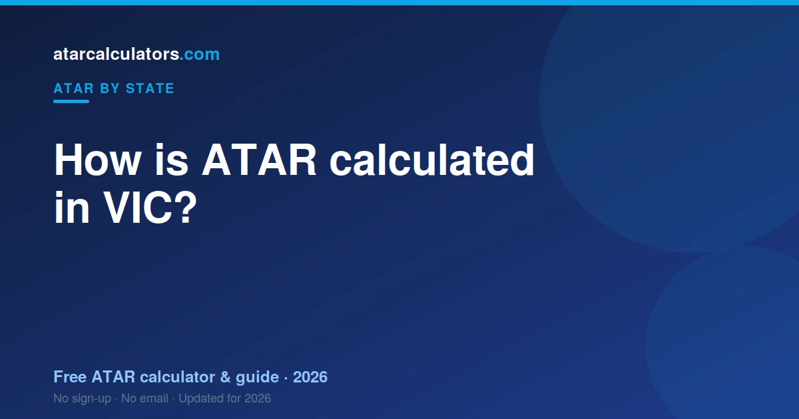

In Victoria, your ATAR is worked out by VTAC from your scaled VCE study scores. VTAC scales each study score, then builds an aggregate from your English study, your next best three scores, and 10% of a fifth and sixth. That aggregate is ranked against your age group to give an ATAR from 0.00 to 99.95. VCAA sets and marks the VCE; VTAC turns those scores into your ATAR.
Key takeaways
- Your VIC ATAR is a rank from 0.00 to 99.95, not an average of your scores.
- It is built from an English study plus your best three, and 10% of a fifth and sixth.
- An English study is compulsory in the aggregate.
- VTAC scales your scores and works out your ATAR. VCAA sets and marks the VCE.
- Each study score is 0 to 50, built from your SACs and exams.
- Your school ranking matters, because it shapes how exam marks moderate your SACs.
- The same ATAR is used by universities across Australia, not just Victoria.

A rank, not a mark
The most important thing to know is that your ATAR is a rank. An ATAR of 85 does not mean you scored 85%. It means you finished ahead of about 85% of your age group.
Because it is a rank, it lets universities compare students who took completely different subjects. That is the whole point of the ATAR.
What the VCE is
The VCE is the Victorian Certificate of Education, the Year 12 qualification in Victoria. It is set and marked by VCAA, the Victorian Curriculum and Assessment Authority.
You finish the VCE with a study score in each subject, from 0 to 50. Those scores are the raw material for your ATAR, but they are not your ATAR. That comes next.
How your study score is built
Each study score runs from 0 to 50, with a mean of about 30. It is built from your School Assessed Coursework, known as SACs, and your final exams.
Your SAC marks are moderated against your cohort’s exam performance. This is why your ranking within your school matters. A strong rank protects your SAC marks, because the group’s exam results are used to align them.
How VTAC scaling works
Once you have your study scores, VTAC scales them. Scaling adjusts each subject so that the same score means the same thing across subjects.
A subject scales up when the students taking it are strong across all their subjects. It scales down when the group is broader. Your rank within the subject never changes — scaling only changes how the score counts towards your ATAR. See which subjects scale well in best scaling subjects in VIC.
How your aggregate is built
VTAC builds your aggregate from your scaled study scores. It takes your English study, which is compulsory, plus your next best three scores in full. It then adds 10% of a fifth and sixth score.
So your four best scaled scores do most of the work, with a small boost from two more. Your weakest subjects count for little or nothing. The maximum aggregate is around 210.
A worked example
Say you take English, Maths Methods, Biology, Business Management and Psychology. After scaling, VTAC uses your English score plus your next best three in full.
It then adds 10% of your fifth score. That aggregate is compared with every other student’s. If it sits higher than 88% of them, your ATAR is about 88.00. Your strongest scores do the heavy lifting.
Who does what in Victoria
Two bodies are involved, and it helps to keep them straight. VCAA runs the VCE: it sets the courses, the exams, and your study scores. VTAC takes those scores, scales them, and works out your ATAR.
So VCAA gives you your VCE. VTAC gives you your ATAR. We cover VTAC in detail in VTAC explained.
How many subjects do you need?
You need study scores in at least four subjects to get an ATAR, including an English study. Most students take five or six subjects.
Taking a couple of extra subjects is a smart safety net. Only your best count in full, so if one subject goes poorly, your top scores still carry your ATAR.
Common mistakes
The first mistake is reading the ATAR as a percentage. It is a rank. The second is picking subjects only because they scale well, then scoring poorly in them. A strong score in a subject you are good at beats a weak score in a high-scaling one.
The third is ignoring your school ranking. In Victoria, your rank shapes your SAC marks through moderation, so it matters as much as the exam itself.
Estimate your VIC ATAR
The clearest way to see all this is to try it. Our VIC ATAR calculator applies the latest official VCE scaling to your study scores and gives you an estimated ATAR.
An estimate is not your official result, which only VTAC can give. It shows you where you stand now, so you can set a realistic target for the rest of Year 12.
The two parts of your study score
Each study score, from 0 to 50, is built from two things: your School Assessed Coursework, known as SACs, and your end-of-year exams. Your SACs are set and marked at your school across the year. Your exams are set and marked by VCAA.
So a chunk of your score is earned across the year, and a chunk in the exam period. Both matter, and a strong run of SACs can steady a shaky exam, just as a strong exam can lift a patchy year.
Why your school ranking matters
Here is the part students miss. Your SAC marks are moderated against your cohort’s exam performance. Your school’s group exam results set the range your SAC marks sit in, and your rank within the group decides where you land in that range.
So your position among your classmates matters as much as your raw SAC score. Climbing even one or two places can lift your moderated mark. Every SAC is a chance to improve your rank, not just your score.
The role of the GAT
Partway through the year you sit the General Achievement Test, or GAT. It does not count directly towards your study scores, but it plays a quiet, important role behind the scenes.
The GAT helps VCAA check that your SACs and exams have been marked fairly and consistently. It is a safeguard for the whole system, so it is worth taking seriously even though it has no direct score of its own.
A fuller worked example, with study scores
Say a student finishes with these study scores: English 34, Maths Methods 38, Chemistry 40, Biology 36 and Business Management 30. VTAC scales each one, then builds the aggregate.
| Subject | Study score | How it counts |
|---|---|---|
| English | 34 | Compulsory, counts in full |
| Chemistry | 40 | Top three, counts in full |
| Maths Methods | 38 | Top three, counts in full |
| Biology | 36 | Top three, counts in full |
| Business | 30 | 10% counts as a fifth score |
English plus the best three count in full, and 10% of the fifth is added. That aggregate is ranked against every student to give the ATAR.
How the increments work
The aggregate is not just your best four scores. After your English study and your next best three, VTAC adds 10% of your fifth study score, and 10% of a sixth if you have one. These are called increments.
So a fifth or sixth subject still helps a little, even though it does not count in full. This is why taking an extra subject is worthwhile: it can add a small boost, and it gives you a safety net if one subject goes poorly.
Scaling in numbers
Scaling can move a study score up or down. A study score of 35 in a subject with a strong cohort might scale up to around 40. The same 35 in a broad-entry subject might scale down to around 31.
This is why two students with the same study scores can end up with different ATARs. What matters is not just your score, but how the subject scales and how you ranked within it.
Study scores are not your ATAR
Students often confuse a study score with the ATAR. They are different. A study score, from 0 to 50, describes your performance in one subject. Your ATAR is a statewide rank, from 0.00 to 99.95, built from your scaled study scores.
You can have solid study scores and an ATAR that surprises you, because the ATAR depends on scaling and on how everyone else did. Study scores describe subjects; the ATAR ranks students.
Why you cannot calculate it exactly yourself
There is no formula you can run at home for your exact ATAR. It depends on how every other student in Victoria performs, and on the exact scaling for that year. Both are only known once all results are finalised.
This is why calculators give an estimate: they apply last year’s scaling to your scores, which is close but not the final figure. See how accurate ATAR calculators are.
How many subjects should you take?
You need study scores in at least four subjects for an ATAR, including an English study. Most students take five or six. Taking more than the minimum is a smart safety net, because your English study plus your best three do most of the work.
An extra subject means one poor result can drop to the increment position, or out of your aggregate, without sinking your ATAR. It also gives you a small boost through the 10% increments. A buffer of one or two extra subjects rarely hurts.
The unscored VCE option
Not every student needs an ATAR. Some complete the VCE unscored, meaning they finish their subjects without sitting for study scores, and so do not receive an ATAR.
This can suit students heading into TAFE, apprenticeships or courses that do not use the ATAR. It is a valid path, and not receiving an ATAR does not close off further study, thanks to the many pathways available.
Turning your estimate into a plan
Once you understand how the ATAR is built, an estimate becomes a planning tool. Enter your current study scores, see your estimated rank, and compare it with the cutoff for your course. That gap is your target for the rest of the year.
Re-run the estimate after each round of SACs. As real scores replace predictions, the number sharpens, and you can see which subjects are moving your rank the most.
What this means for choosing subjects
Put together, the process points to a simple strategy. Take an English you can do well in, since it is compulsory. Add subjects you are strong in, because your best scores carry your ATAR. Include a high-scaling subject only if you can score well in it.
Then take a small buffer of extra subjects, so one weak result can drop out. Do that, and the machinery of scaling and aggregation works in your favour rather than against you.
Common questions
How many subjects do you need for a VIC ATAR?
You need study scores in at least four subjects, including an English study. Most students take five or six. Your English study plus your best three count in full, with 10% of a fifth and sixth.
Is English compulsory for the VIC ATAR?
Yes. An English study — English, EAL, Literature or English Language — must be included in your aggregate. It is the only compulsory part of the VIC ATAR.
Who calculates the VIC ATAR?
VTAC, the Victorian Tertiary Admissions Centre, calculates the VIC ATAR. VCAA sets and marks the VCE, and VTAC scales those study scores and works out your ATAR.
How does VCE scaling work?
VTAC scales each subject based on how strong the students taking it are across all their subjects. A strong cohort scales a subject up; a broader one scales it down. Your rank within the subject never changes.
What is the maximum VIC ATAR?
The highest possible ATAR is 99.95, the same across Australia. Ranks below 30.00 are usually reported as “less than 30”.
What is the GAT and does it count?
The General Achievement Test, or GAT, does not count directly towards your study scores. It helps VCAA check that SACs and exams are marked fairly and consistently across the state.
Are study scores the same as an ATAR?
No. A study score, from 0 to 50, describes your performance in one subject. Your ATAR is a separate statewide rank, from 0.00 to 99.95, built from your scaled study scores across subjects.